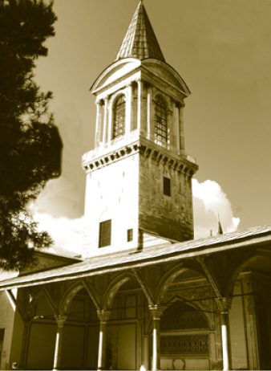

ADALET KULESİ (KASR-I ADL)
Kasr-ı Adl, Neo-rönesans üslubuna uygun yapılmış olup İstanbul’un her tarafından görünen, imparatorluğun yüksekliğini ve haşmetini temsil eden bir kuledir. İhtişamının ilginç bir noktası, Ayasofya ve Sultanahmet gibi anıtvari yapıların minareleri ile boy ölçüşecek kadar yüksek olmasıdır. Adalet Kulesi, İstanbul’un en iyi gözlendiği noktalardan biridir. Bilhassa gurub zamanı Haliç’in hâlâ bir altın boynuz gibi parladığını buradan görmek mümkündür.
Divan-ı Hümâyûn’a profilini veren bu kule, yüksekliğinden çok zarafetiyle sarayı temsil eder. Kulenin zemini Fatih zamanında yapılmıştır. Saray yangınından sonra 17. yüzyılda kâgir olarak inşa edilmiştir. Osmanlı döneminin bütün saraylarında; Bahçesaray’daki Hansaray’da, Edirne Sarayı’nda hatta 18. yüzyılda ünlü ayan konaklarında bunun benzeri kuleler vardı. Ama hiçbiri böyle değildir ve Osmanlı merkez teşkilatının en önemli organına Kubbealtı, bu organın üyelerine “Kubbenişin ricali” dendiğini hatırlarsak, devleti isimlendirmiştir.
45 metre yüksekliğindeki kule, Osmanlı döneminde Harem ağalarının geceli gündüzlü nöbet tuttukları bir mekândır. İlk katında Kubbealtı’na bakan pencere vardır ki burası Adl Köşkü olarak anılır. İkinci ve üçüncü katlarında sahanlıklar bulunur. Dördüncü katın etrafı camlı olup konik külâhlıdır.
Padişah, Adalet Kulesi’ne Harem’den girer, padişahın Adalet Kasrı’ndan Divan-ı Hümâyûn toplantılarını takip ettiğini bilen divan üyeleri çok ciddi dururlar ve koyu bir disiplin içinde toplantılarını yaparlar. Divan toplantılarını Kubbealtı’na bakan kafesli pencereden padişahların takip etmesi için kullanılan Adalet Kulesi, adını divana yaptığı bu nezaretten alır. Çok geniş bir manzara imkânı sunan abidevi kule Osmanlı döneminde ayaklanmaları takip, saray çevresini kontrol etmek için de kullanılırdı. Adalet Kulesi Kasr-ı Sultani ve Kasr-ı Adl adları ile de anılmaktadır.
Adalet Kulesi’ne Harem içerisinde kara ağalar nöbet yerinden ulaşılır.

Adalet Kulesi